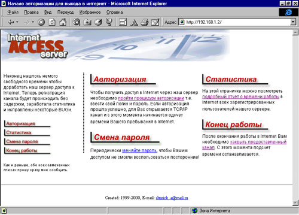
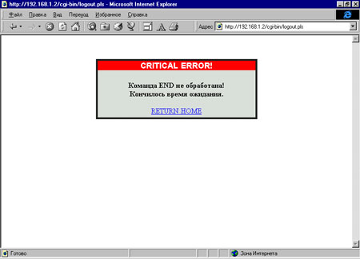
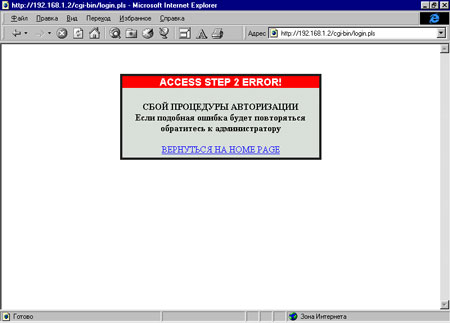

Shurick_a@mail.ru
В первой части статьи* мы говорили о структуре системы доступа в Интернет и настройке ПО. Теперь все подготовительные операции позади. Переходим к процессу творческому - написанию задуманного нами обработчика запросов (давайте назовем его сервером доступа) и CGI-скриптов.
*А. Мартынов, "Ваш Linux-шлюз в Интернет", "Byte/Россия" №3/2001.
Сервер
Общие замечания
Обычно программы подобного рода пишут на С или С++ и оформляют в виде демонов - неинтерактивных процессов без управляющего терминала. Делается это в основном для увеличения производительности и для экономии вычислительных ресурсов компьютера. Но перед нами не стоит задача обработки большого потока запросов (сеть у нас маленькая), и поэтому производительности, обеспечиваемой программой на Perl, более чем достаточно. Запускать наш сервер доступа в режиме демона также пока не будем (чтобы не отвлекаться на описание нюансов оформления программ для работы в этом режиме). Ограничимся лишь автоматическим переводом его в фоновое выполнение после старта.
Алгоритм работы
Прежде чем перейти непосредственно к кодированию, более тщательно продумаем алгоритм функционирования нашего сервера доступа. Начнем с сообщений, которыми будут обмениваться задачи в разрабатываемой системе. Как известно, чтобы один процесс "понимал", что от него хочет другой, оба они должны использовать одинаковый формат сообщений. Поэтому с этим нужно определиться сразу. Не претендуя на оригинальность, будем формировать запросы в виде строки, состоящей из последовательности слов, разделенных точкой с запятой. Например, команда на открытие доступа в Интернет примет следующий вид:
192.168.1.10;access;alex;qwert
Здесь пользователь с IP-адресом 192.168.1.10 посылает запрос access, а с ним свой логин - alex и пароль - qwert. Исходя из этого формата, опишем все команды, необходимые нам для полноценного функционирования системы.
Запрос на начало работы - ip_аddress;access;name;passwd. Получив эту команду, сервер должен проверить права доступа данного пользователя и в случае успеха открыть канал в Интернет для компьютера с данным IP. Кроме того, с этого момента начинается отсчет времени, проведенного данным человеком в Сети.
Запрос на окончание работы - ip_аddress;end. После его поступления канал в Интернет для пакетов с данным IP закрывается, и фиксируется время конца работы.
Запрос статистики - ip_аddress;stats. В ответ на это сервер доступа выдает статистику количества проведенного в Интернете времени для каждого из зарегистрированных пользователей.
Запрос о тех, кто в данный момент работает в Интернете, - ip_аddress;who. Эта информация бывает полезна, чтобы примерно оценить загруженности канала.
Запрос на смену пароля - ip_аddress;pwup;name;passwd;new_passwd. Всегда полезно давать пользователям возможность время от времени менять свой пароль. Во-первых, это уменьшает вероятность того, что кто-то сможет воспользоваться чужим логином, а во-вторых, освобождает от лишних хлопот по сопровождению файла паролей.
Этого набора достаточно, чтобы обеспечить пользователей всем необходимым для нормальной работы, но добавить еще несколько команд впоследствии не составит труда.
Теперь рассмотрим, каким же образом осуществляется обмен данными в обратную сторону? Ведь процесс, пославший сообщение обработчику, должен знать, принято оно или нет. Кроме того, некоторые из запросов в ответ должны получить еще и данные. На первый взгляд, для этой цели также можно применить канал FIFO, но направленный в противоположную сторону, от сервера к процессам. Но не все так просто. Дело в том, что в многозадачных ОС никто не может дать гарантии, что несколько задач, друг за другом пославших запросы на обработку, получат доступ к FIFO-каналу и ответ в той же последовательности. В результате данные может получить совсем не тот, кому они адресованы.
Решить эту проблему можно несколькими способами. В нашем случае проще всего будет отказаться от FIFO, а воспользоваться приемом, который также часто применяется в многозадачных системах, - создание так называемых файлов-флагов. Смысл этого метода заключается в том, что после обработки поступившего запроса создается файл ответа с уникальным именем, известным как серверу доступа, так и процессу, пославшему запрос. Последний в свою очередь ждет появления файла с этим именем, и как только тот появляется, считывает из него результат выполнения команды.
Забегая немного вперед, поясню, как будет формироваться уникальное имя файла. Для этого воспользуемся функцией ip_convert, предложенной в книге К. Пэтчетта и М. Райта "CGI/Perl. Создание программ для Web" (СПб.: "BHV-Санкт-Петербург, 2000). С ее помощью мы будем преобразовывать IP-адрес машины, пославшей запрос, в уникальное восьмисимвольное имя файла, а в качестве расширения используем три первые буквы посланной команды. В результате у нас будут формироваться отдельные файлы-ответы как для разных компьютеров, так и для разных запросов, посланных одним компьютером. Последнее необходимо, чтобы оградить себя от пользователей, которые нечаянно или умышленно посылают сразу несколько команд, не дождавшись обработки первой. Таким образом, в ответ на просьбу открыть канал в Интернет для компьютера с IP=100.100.100.100 мы получим файл-ответ с именем ZGRkZAAw.acc.
Таким образом, алгоритм работы нашего сервера доступа имеет следующий вид.
- Начинаем работу и переходим в фоновый режим.
- Инициализируем необходимые переменные, организовываем канал FIFO.
- В бесконечном цикле ждем появления запроса.
- Принимаем запрос на обработку.
- Создаем файл-ответ и помещаем в него результат обработки.
Анализ кода
А теперь посмотрим, как все это выглядит на языке Perl. Начало стандартное:
#!/usr/bin/perl -w use strict;
Первая строка сообщает управляющей оболочке (shell), что это программа на Perl, а вторая переключает интерпретатор Perl в режим проверки кода по более жестким правилам, одно из которых требует обязательного объявления переменных перед их использованием. Это, во-первых, несколько повышает скорость работы (обращение к переменной, созданной с помощью оператора my, выполняется быстрее, чем к обычным переменным), а во-вторых, позволяет избежать множества неявных и плохо поддающихся выявлению ошибок.
Далее объявляем все необходимые нам переменные, назначение которых разъясняется в комментариях:
my $mknod ="/bin/mknod"; # команда создания # канала FIFO my $ipfwadm ="/sbin/ipfwadm"; # команда конфигурирования # межсетевого экрана my $resetfw ="/etc/diald/firewall.def"; # скрипт # установки межсетевого экрана в исходное состояние my $killdiald="/etc/diald/quit.diald"; # скрипт # посылает в канал diald команду завершения my $home ="/etc/inet4all"; # путь к программе. my $tempdir ="$home/temp"; # путь к файлам-ответам на команды my $dialdlog ="/var/log/diald.log"; # лог файл diald my $sema ="$home/.inetpid"; # при старте запоминаем свой id my $mainlog ="$home/inetmain.log"; # статистика доступа # к Интернету my $templog ="$home/inettemp.log"; # список открытых каналов my $errorlog ="$home/error.log"; # критические ошибки # будут валиться сюда my $passwd ="$home/passwd"; # файл со списком паролей my $fifo ="$home/inet.ctl"; # имя канала my $warning ="$home/warning.log"; # файл попыток # несанкционированного доступа my $statsfile ="$home/stats"; # файл со статистикой # за последний месяц my $dust ="$home/dust.pls"; # скрипт для удаления # уже не нужных файлов-ответов my $datastr; # строка данных, полученная из канала my @command; # массив команд, полученных из $datastr my $templine; # текущая запись из файла $templog my ($ip, $name, $pass); # данные пользователя my ($timestart, $timeend, $diff); # время начала, # конца и продолжительность работы в Интернете my %password; # хеш логинов и паролей my ($oldpass, $newpass, $confpass); # используются при # смене пароля |
После этого выполним несколько подготовительных операций. Во-первых, проверим, не запущен ли уже один экземпляр сервера доступа. Нельзя допустить, чтобы два или более процессов "дрались" за одни и те же ресурсы.
justme(); # проверим, не запущен ли сервер
Эта функция реализована так:
sub justme # проверим, не запущена ли уже
# наша программа
{
if ( open( SEMA, "< $sema" ))
{
my $pid;
chomp( $pid = );
kill( 0, $pid) and die "$0 already running (pid $pid),
bailing out\n";
close SEMA;
}
} ##jastme |
Здесь из файла с именем $sema считывается значение идентификатора процесса, записанное туда обработчиком в предыдущем сеансе работы. Затем функцией kill(0, $pid) мы проверяем, существует ли процесс с этим id в настоящее время, и если существует, то "вываливаемся" с сообщением о том, что сервер уже запущен.
Если процесса с таким id нет, то переходим в фоновый режим работы и записываем свой идентификатор в файл $sema:
fork && exit; # уходим в фоновый режим # запоминаем свой pid процесса open( SEMA, "> $sema" ) || die "can't write $sema : $!\n"; print SEMA "$$\n"; close(SEMA) || die "can't close $sema : $!\n"; |
Далее берем под контроль межсетевой экран и сразу устанавливаем его в исходное состояние:
system ("$resetfw") && crerror( "Can't run $resetfw");
По сути, здесь мы запускаем скрипт настройки межсетевого экрана, который должен выполняться при запуске ОС. Если свой межсетевой экран у вас еще не настроен, для отладки подойдет, например, такой скрипт (имя файла firewall.def):
#! /bin/sh ipfwadm -I -f ipfwadm -O -f ipfwadm -F -f ipfwadm -I -p accept ipfwadm -O -p accept ipfwadm -F -p deny exit 0 |
Разумеется, после запуска системы в эксплуатацию необходимо будет заменить эти настройки на более серьезные. Вспомните о хакерах - они не дремлют!
Далее правила "хорошего тона" требуют от нас проверки корректности завершения предыдущего сеанса работы и "уборки мусора", оставленного при аварийной остановке. Этот "мусор" может накапливаться в двух местах: во-первых, в файле $templog, где находится информация об открытых каналах и, во-вторых, в директории $tempdir, куда помещаются файлы-ответы. Обрабатывает данную ситуацию следующий код:
# проверяем корректность выхода в предыдущий сеанс
if ( -e $templog ) # если в файле есть записи, значит, был сбой
{ # во время работы в Интернете
# Необходимо данные из $templog перенести в $mainlog
open( TEMPLOG, "< $templog") || die "Can't open
$templog : $!\n";
open( MAINLOG, ">> $mainlog") || die "Can't open
$mainlog : $!\n";
seek( MAINLOG, 0, 2) || die "Couldn't seek to the end: $!\n";
# к каждой строке из $templog, имеющей формат
# ip_адресимявремя_входа,
# допишем дополнительную информацию
# время_выходапродолжительностькомментарий
# и поместим в $mainlog
while ( $templine = ) # считали очередную строку из $templog
{
chomp($templine); # отбросили символ перевода строки
($ip, $name, $timestart) = split(/\t/, $templine);
# разобрали строку на составляющие
$timeend = time; # узнали текущее время
my $diff = $timeend - $timestart; # вычислили
# продолжительность нахождения на линии в секундах
# Преобразуем время входа и выхода в формат
# DD/MM/YYYY:HH.MM.SS
$timeend = formattime( $timeend );
$timestart = formattime( $timestart );
# Полученные данные пошлем в $mainlog
print MAINLOG
"$ip\t$name\t$timestart\t$timeend\t$diff\tEmergency
closing of the channel !\n";
}
close( MAINLOG );
close( TEMPLOG );
unlink( $templog ); # Удаляем $templog
}
# Очищаем директорию TEMP
unlink( "$tempdir/*" );
|
Я думаю, сам механизм ясен. Поясню лишь общую идею - зачем нужны все эти $templog и $mainlog.
Пользователь, успешно прошедший авторизацию, регистрируется в файле $templog. Запись о нем представляет собой строку, состоящую из данных, разделенных символами табуляции:
ip_адресимявремя_входа
По окончании работы строка, соответствующая нашему пользователю, дополняется еще некоторыми данными:
время_выходапродолжительность_работыкомментарий
и переносится в основной файл журнала- $mainlog. Поэтому при корректном выходе из программы файл $templog должен быть пустым. Если мы обнаруживаем, что в $templog что-то есть, то делаем вывод, что предыдущий сеанс работы сервера завершился аварийно. В этом случае записи из $templog переносятся в $mainlog с соответствующим комментарием, после чего $templog удаляется. На всякий случай полностью очищаем и каталог, содержащий файлы ответов, - $tempdir
Следующей операцией считываем данные из файла паролей и инициализируем ими хеш %password (другое название хеша - ассоциативный массив):
open( PASSWD, "< $passwd") || die "Can't open
$passwd : $!\n";
while ( $templine = )
{
chomp($templine);
($name, $pass) = split(/:/, $templine);
$password{$name} = $pass;
}
close( PASSWD ); |
И, наконец, в случае необходимости организуем канал FIFO:
# Проверяем, существует ли канал
unless ( -p $fifo )
{
if ( !-e $fifo ) {# а вообще файл с таким именем существует?
# если нет, то пытаемся его создать
system( "$mknod $fifo p" ) && die "can't mknod $fifo\n" }
else {
# если он уже существует, значит, это не канал,
# а простой файл с таким же именем,
# и поэтому мы не можем создать FIFO
die "$0: won't overwrite file $fifo\n"; }
}
|
А вот эта строчка требует более детального обсуждения:
$SIG{ALRM} = sub { close(FIFO) };
Здесь мы определяем функцию, которая будет выполняться каждый раз при получении нашим сервером сигнала ALRM. Не вдаваясь в подробности работы механизма сигналов, объясню, зачем это нужно.
При обмене сообщениями через FIFO-канал процесс-приемник открывает его со своей стороны в режиме чтения и ждет поступления данных. Процесс-передатчик, в свою очередь, открывает FIFO-канал на запись и посылает сообщение. Передав все необходимое, передатчик закрывает канал со своей стороны, а приемник в этот момент получает признак конца файла (операция <> возвращает undef). После этого считается, что сообщение было полностью передано.
Но может случиться так, что передатчик, открыв канал, по какой-либо причине его не закрывает. В результате приемник оказывается заблокированным для других задач. Чтобы избежать подобной блокировки, мы будем принудительно закрывать FIFO-канал, посылая самим себе сигнал от таймера - ALRM. Как это делается, выясним немного позже.
А сейчас, когда закончены все подготовительные операции, пора запускать главный, бесконечный цикл:
# в бесконечном цикле читаем данные из канала
while ( 1 ) {
А вот и код, предохраняющий нас от зависших передач в канал:
alarm(0); # отключить реагирование по сигналу таймера
open(FIFO, "< $fifo") || crerror( "Can't open $fifo: $!");
alarm(1); # Через 1 с послать сигнал SIGALRM
$datastr = <FIFO> # Пытаемся получить строку
# данных из канала
next unless defined $datastr; # если ничего не получили,
# то переходим на начало цикла
chomp $datastr; # если что-то пришло, откидываем
# символ переноса строки
alarm(0); # отключить реагирование по сигналу таймера
|
Отсюда видно, что на процедуру чтения из канала мы отводим 1 с (достаточно много по компьютерным меркам), и если какая-либо из операций не уложилась в это время, то срабатывает таймер, вызывающий подпрограмму sub { close(FIFO) }. Канал закрывается, и наш сервер успешно продолжает работать дальше.
Это, пожалуй, самый тонкий момент во всей программе. Но надеюсь, что я все объяснил достаточно доступно, и мы можем двигаться дальше.
@command = split(/;/, $datastr);
Разбиваем полученную строку на составляющие, используя в качестве разделителя точку с запятой, и результат помещаем в массив @command. Значения элементов массива, в зависимости от принятого сообщения, наглядно можно представить в виде таблицы (табл. 1).
Таблица 1. Значения элементов массива в зависимости от принятого сообщения
| access | pwup | end | who | stats | |
| $command[0] | ip адрес | ip адрес | ip адрес | ip адрес | ip адрес |
| $command[1] | access | pwup | end | who | stats |
| $command[2] | login | login | ----- | ----- | ----- |
| $command[3] | password | oldpasswd | ----- | ----- | ----- |
| $command[4] | ----- | newpasswd | ----- | ----- | ----- |
| $command[5] | ----- | confirm | ----- | ----- | ----- |
Таким образом, при приеме команды на открытие канала в Интернет массив @command будет содержать четыре элемента, при запросе на смену пароля - шесть, а во всех остальных случаях - по два. Кстати, подобный механизм разбора входных сообщений выбран не случайно. Он позволяет достаточно просто добавлять обработку новых запросов для расширения возможностей системы. Необходимо лишь увеличить количество операторов elsif в блоке распознавания команд и написать соответствующие подпрограммы.
А вот и этот блок:
if ( $command[1] eq "access" )
# просьба дать доступ к Интернету
{
($ip, undef, $name, $pass) = @command;
access( $ip, $name, $pass );
}
elsif ( $command[1] eq "who" ) # кто сейчас на линии
{
$ip = $command[0];
who( $ip );
}
elsif ( $command[1] eq "end" ) # конец работы
{
$ip = $command[0];
endwork( $ip );
}
elsif ( $command[1] eq "pwup" ) # смена пароля
{
($ip, undef, $name, $oldpass, $newpass,
$confpass) = @command;
pwup( $ip, $name, $oldpass, $newpass, $confpass );
}
elsif ( $command[1] eq "stats" ) # запрос о статистике
{
$ip = $command[0];
stats( $ip );
}
} |
Сравнивая запрос, находящийся в элементе массива с номером 1, с командами, известными серверу, мы определяем, какую процедуру необходимо вызвать для его обработки. Если пришел запрос, неизвестный системе, он просто игнорируется.
На этом цикл обработки полученного сообщения завершается и все повторяется снова. Как видите, реализация "движка" нашего обработчика проста и компактна, что, в общем-то, от него и требуется.
Для полноты картины нам осталось рассмотреть реализацию подпрограмм обработки запросов и вспомогательных функций. Но из-за ограниченного объема статьи остановимся лишь на тех из них, которые, на мой взгляд, представляют наибольший интерес. Разобраться в них, как мне кажется, будет несложно, так как везде даны подробные комментарии.
Команда Access
В качестве примера обработки сообщения рассмотрим процедуру, вызываемую при поступлении запроса на доступ в Интернет. Остальные обработчики функционируют аналогично, и останавливаться на них мы не будем.
Итак, в FIFO-канал поступила команда access, сработал один из операторов eslif и была вызвана подпрограмма access() с параметрами $ip, $name, $pass.
Строчкой:
my ($acc_ip, $acc_login, $acc_pass) = @_;
мы принимаем переданные параметры и инициализируем ими внутренние переменные. Далее при помощи трех вложенных операторов if проверяем соответственно:
1. Все ли необходимые данные получены (сейчас нас интересует IP-адрес пользователя, его логин и пароль)?
if ( $acc_ip && $acc_login && $acc_pass )
# все нужные данные получили
{
2. Имеет ли данный пользователь права доступа?
if ( $password{$acc_login} && $password{$acc_login}
eq $acc_pass )
{
3. Есть ли уже пользователи, работающие в Интернете?
if ( -e $templog ) # На линии уже кто-то есть
{
Последняя проверка необходима для того, чтобы исключить двойную регистрацию, когда один пользователь пытается работать сразу с нескольких компьютеров. Обрабатывается эта ситуация следующим образом:
open( TEMPLOG, "< $templog") || crerror( "Can't
open $templog : $!");
while ( $templine = )
{
chomp($templine);
($ip, $name, $timestart) = split(/\t/, $templine);
if ( $name eq $acc_login ) # человек с таким
# именем уже на линии
{
# возвращаем ответ - попытка
# зарегистрироваться два раза
answer( $acc_ip, "access", "second" );
close( TEMPLOG );
return ;
} |
Мы открываем файл $templog, считываем находящиеся в нем записи о пользователях, уже работающих в Интернете, и сравниваем с полученным именем. Если оказывается, что этот человек уже зарегистрирован в $templog, то при помощи функции answer() создаем файл-ответ, в который записывается слово second. Процесс, пославший запрос в канал, прочитает ответ и передаст пользователю сообщение о недопустимости работы с нескольких компьютеров сразу.
Что представляет собой функция answer(), мы рассмотрим далее, а сейчас проанализируем еще такую ситуацию. Допустим, один из сотрудников зарегистрировался, получил доступ в Интернет и куда-либо отошел (вызвал шеф, например), забыв закрыть канал. Другой пользователь видит свободный компьютер и тоже решает поработать в Сети, подходит и регистрируется. В результате в $templog у нас оказываются две записи для одного канала. На первый взгляд, ничего страшного в этом нет. Канал открыт - работай на здоровье. Но вот второй сотрудник, поработав, решил, что на сегодня хватит и закрыл свой канал. Его запись из $templog удалилась, а запись первого пользователя осталась, и в ней указано, что канал для этого компьютера открыт. Вот это уже плохо! Необходимо предусмотреть такую маловероятную, но все же возможную ситуацию:
if ( $ip eq $acc_ip ) # С этого IP уже работают в Интернете
{
# Обновляем данные в templog. Вместо данных старого
# пользователя записываем данные нового
$templine = "";
close( TEMPLOG );
open( TEMPLOG, "< $templog") || crerror( "Can't
open $templog : $!");
seek( TEMPLOG, 0, 0) || crerror( "Couldn't
seek to the end: $!");
while ( ) # ищем пользователя, зарегистрировавшегося с этого IP
{
chomp;
( $ip, $name, $timestart ) = split(/\t/);
if ( $ip eq $acc_ip ) # нашли пользователя,
# зарегистрировавшегося с этого IP
{
$timeend = time;
$templine .= "$acc_ip\t$acc_login\t$timeend\n";
# делаем в mainlog запись об окончании работы
# старого пользователя
open( MAINLOG, ">> $mainlog") ||
crerror( "Can't open $mainlog : $!");
seek( MAINLOG, 0, 2) || crerror( "Couldn't seek
to the end: $!");
my $diff = $timeend - $timestart; # Вычислили
# продолжительность нахождения на линии в секундах
$timeend = formattime( $timeend );
$timestart = formattime( $timestart );
print MAINLOG "$ip\t$name\t$timestart\t$timeend\t$diff\n";
close( MAINLOG );
}
else
{
$templine .= "$_\n";
}
}
close( TEMPLOG );
open( TEMPLOG, "> $templog") || crerror( "Can't open
$templog : $!");
print TEMPLOG "$templine";
close( TEMPLOG );
answer( $acc_ip, "access", "ok" );
return ;
}
}
close( TEMPLOG );
} |
Проще говоря, этот код вместо старого пользователя "подставляет" нового.
Если человек, решивший поработать в Интернете, оказывается первым ($templog не содержит ни одной записи), то к манипуляциям, необходимым для его регистрации, добавляется еще и команда запуска демона diald, о котором мы говорили в предыдущей статье.
else # На линии еще никого нет
{
# !!!!!!!!!!!!!!!!!!!!!!запускаем diald
system ("/usr/sbin/diald") && crerror( "Can't
run DIALD");
} |
И наоборот, как только последний из сотрудников заканчивает работу, diald посылается команда завершения. Эта небольшая предосторожность введена для того, чтобы исключить ложные срабатывания сервера дозвона, в случаях, когда какой-нибудь неаккуратно сконфигурированный сервис вдруг начинает пытаться посылать пакеты во внешнюю Сеть.
Итак, наш пользователь прошел все необходимые проверки, и мы можем сделать вывод, что он имеет право на доступ в Интернет. Остается только открыть для него канал в межсетевом экране:
system ("$ipfwadm -F -a accept -m -S $acc_ip -D 0.0.0.0/0")
&& crerror( "Can't run IPFWADM");
system ("$ipfwadm -F -a accept -m -S 0.0.0.0/0 -D $acc_ip")
&& crerror( "Can't run IPFWADM");} |
сделать соответствующую запись в $templog:
open( TEMPLOG, ">> $templog") || crerror( "Can't open $templog : $!"); seek( TEMPLOG, 0, 2) || crerror( "Couldn't seek to the end $templog : $!"); $timestart = time; print TEMPLOG "$acc_ip\t$acc_login\t$timestart\n"; close( TEMPLOG ); |
и создать файл-ответ со словом ok:
answer( $acc_ip, "access", "ok" );
После этого пользователь, набрав в своем браузере адрес внешнего узла, сможет увидеть загрузку необходимой ему странички.
Ну а если по какой-либо причине авторизация не была успешной (кто-то забыл пароль, ошибся или просто хотел прощупать защиту), мы поместим запись об этой попытке в отдельный журнал и будем время от времени в него заглядывать, чтобы узнать, не пытается ли кто-нибудь взломать наш сервер:
open( WARNING, ">> $warning") || crerror( "Can't open $warning : $!"); seek( WARNING, 0, 2) || crerror( "Couldn't seek to the end $warning : $!"); $timestart = formattime(time); print WARNING "$timestart access denied for $acc_login from IP=$acc_ip\n"; close( WARNING ); |
а в ответ пошлем сообщение о том, что в доступе отказано:
answer( $acc_ip, "access", "denied" );
На этом обработка запроса заканчивается и управление возвращается "движку". Он снова начинает контролировать FIFO-канал и ждать команд от пользователей.
Подпрограмма Answer()
Эта процедура, пожалуй, наиболее часто используется в нашем обработчике. Она вызывается каждый раз, когда необходимо что-либо сообщить в ответ на поступивший запрос. Однако ее функция состоит не только в том, чтобы создавать файлы-ответы; она следит еще и за тем, чтобы эти файлы-ответы были вовремя удалены и не засоряли систему. Но поговорим обо всем по порядку.
Во-первых, определяем, где будет находится и как будет называться наш файл-ответ:
my $tempname = "$tempdir/tempfile";
Из этой строки видно, что путь мы берем из переменной $tempdir, а имя нашего файла-ответа - tempfile. Как же так, скажете вы, ведь мы собирались присваивать им хитроумные уникальные имена.
Поясню, в чем дело. Здесь опять проявляются нюансы работы в многозадачной среде. Может получиться так, что мы создадим файл-ответ и начнем в него запись необходимых данных, а в это самое время процесс, пославший запрос, начнет из него читать, - ведь он не знает, что запись еще не завершена. Чем закончится данная коллизия, никому не известно.
Обойти эту проблему позволяет применение системы блокировок, но ее использование оправдано в более сложных проектах. Мы же поступим проще - сначала запишем все, что необходимо, в промежуточный файл (tempfile), а затем переименуем его. Это гарантирует нам, что когда ожидающий процесс увидит файл-ответ, тот будет уже полностью сформирован.
Итак, вернемся к разбору кода. Следующей строкой мы инициализируем внутренние переменные данными, переданными нам в качестве параметров:
my ( $ip_ans, $com_ans, $text_ans ) = @_;
Затем конвертируем IP-адрес пользователя в восьмисимвольное представление при помощи функции ip_convert:
my $filename = ip_convert( $ip_ans );
К полученному набору символов прибавляем точку и три первые буквы названия обрабатываемой команды:
$filename .= ".".substr( $com_ans,0,3 );
В результате переменная $filename содержит необходимое нам имя файла. Затем записываем строку ответа в файл $templog:
<p>open( ANSWER, "> $tempname" ) || crerror( "can't write $tempname : $!"); print ANSWER "$text_ans\n"; close(ANSWER) || crerror( "can't close $tempname : $!"); |
и переименовываем его:
rename( $tempname, "$tempdir/$filename" ) || crerror( "can't rename $tempname : $!");
Остался последний штрих. Необходимо вовремя избавляться от отработанных ответов, чтобы процесс, пославший запрос серверу доступа, по ошибке не принял старый файл за предназначенный ему ответ.
Сделать это можно двумя способами - либо удалять файл-ответ после прочтения из самого запроса, либо запускать небольшую внешнюю программку, которая через определенное время, достаточное для чтения данных, уничтожит указанный файл. Я предпочитаю последний способ - не люблю, когда программы, запускаемые внешними пользователями, начинают что-либо удалять на моем жестком диске.
Приведенный ниже маленький скрипт (как видите, тоже на Perl) через 60 секунд удалит файл, имя которого ему будет передано в командной строке:
#!/usr/bin/perl -w
use strict; # Обьявлять переменные перед использованием
use Getopt::Long; # Подключаем библиотеку для работы
# с командной строкой
use vars qw( $file );
GetOptions( "file=s" => \$file );
if ( !$file ) {
print "example: dust.pls --file=/name/of/file\n";
return; }
sleep(60);
if ( -e $file ) {
unlink $file; } |
А вот так мы запускаем этот скрипт на выполнение из подпрограммы answer():
system ("$dust --file=$tempdir/$filename &") &&
crerror( "Can't run script $dust");
Обратите внимание на знак & в конце команды запуска. Он имеет то же значение, что и в стандартной shell, т.е. выполняет программу в фоновом режиме. Необходимо это для того, чтобы наш сервер доступа не дожидался окончания процесса удаления, а продолжал свою работу.
Мы не рассмотрели еще несколько процедур. Я не стал на них останавливаться, так как они скорее выполняют вспомогательные функции, чем иллюстрируют механизм работы разрабатываемой системы. В любом случае, как говорилось выше, все исходники доступны и в них имеются подробные комментарии.
Тестирование
Итак, алгоритм работы нашего сервера доступа полностью продуман, по нему написан код, этот код отлажен - пора начинать тестирование.
Для начала убедимся, что все задействованные нами программы и файлы находятся на своих местах. Для этого обратимся к разделу инициализации переменных сервера (табл. 2) и проверим, не расходятся ли наши предположения с действительностью.
Таблица 2. Переменные сервера
| Программа | Путь | Комментарий |
| mknod | /bin/mknod | Команда создания FIFO-канала |
| ipfwadm | /sbin/ipfwadm | Команда конфигурирования межсетевого экрана |
| firewall.def | /etc/diald/firewall.def | Скрипт установки межсетевого экрана в исходное состояние |
| Diald | /usr/sbin/diald | Команда запуска демона дозвона |
| quit.diald | /etc/diald/quit.diald | Скрипт посылает в канал diald команду завершения |
| inet4all.pls | /etc/inet4all/inet4all.pls | Наш сервер доступа |
| /temp | /etc/inet4all/temp | Каталог, в котором будут храниться файлы-ответы |
| passwd | /etc/inet4all/passwd | Файл со списком паролей |
| dust.pls | /etc/inet4all/dust.pls | Скрипт для удаления уже ненужных файлов-ответов |
Если что-то не так - необходимо подправить соответствующие значения переменных.
Затем переходим в каталог /etc/inet4all/ и запускаем наш сервер доступа:
./inet4all.pls
Программа после запуска должна перейти в фоновый режим, вернув управление shell. Кроме этого, в нашем каталоге должны появиться два дополнительных файла - .inetpid, содержащий id сервера, и FIFO-канал inet.ctl. Если все так и произошло - прекрасно. Наш сервер запущен и ждет запросов.
Теперь составим простенький тестовый скрипт:
#!/bin/sh FIFO="/etc/inet4all/inet.ctl" [ $FIFO ] && echo "192.168.1.15;access;alex;qwert" >$FIFO |
Назовем его test и сделаем выполняемым:
chmod 755 test
Как видно, наш тест посылает в FIFO-канал строку, которую можно редактировать по своему усмотрению. Несмотря на простоту, с его помощью можно проверить работу нашего сервера практически во всех режимах. Необходимо лишь соответствующим образом сформировать строку запроса.
Итак, запускаем тест на выполнение и после того, как он отработает, быстро переходим в подкаталог /temp. Там должен находиться файл-ответ с именем wKgBDwAA.acc, содержимое которого зависит от того, есть ли в файле паролей пользователь с именем alex и паролем qwert. Если есть, то wKgBDwAA.acc будет содержать слово ok. Если такого пользователя нет, то в файле-ответе будет стоять denied. После этого подождем немного (около минуты) и снова проверим наличие wKgBDwAA.acc в /temp. Его там уже быть не должно.
Если у вас все прошло именно так, можно с облегчением вздохнуть - сервер работает как надо. В противном случае рекомендую следующий метод поиска проблемы. Найдите в исходнике сервера следующую строчку:
fork && exit;
и закомментируйте ее. Это не даст ему переключиться в фоновый режим после старта, и все сообщения об ошибках начнут выдаваться на эту консоль. Вы тем временем, нажав Alt+F2, сможете переключиться на другой экран терминала, зарегистрироваться в системе и перейти в каталог с нашим тестом. Запустив тестовый скрипт с одного терминала и наблюдая реакцию сервера на другом, вам будет гораздо проще разобраться, в чем дело.
Вот, пожалуй, и все, что касается серверной части нашего проекта. Большая часть работы позади. Осталась самая малость - разработать Web интерфейс с CGI-скриптами для него.
CGI-сценарии
Предварительные условия
Вначале перечислим все ПО, необходимое нам на этом этапе. Оно должно быть уже установлено и соответствующим образом сконфигурировано. Итак, нам потребуется следующее:
- Установленный и сконфигурированный демон автоматического дозвона по требованию - diald.
- Ядро, собранное с включенной поддержкой межсетевого экрана.
- Сеть TCP/IP из рабочих станций и Linux-сервера, сконфигурированных на использование IP-адресов одного класса.
- Web-сервер, способный запускать на выполнение CGI-скрипты.
- Работающий обработчик запросов, созданный нами выше.
- Убедитесь, что все в порядке, прежде чем продолжить чтение, ибо далее нам предстоит объединить все ПО в единый комплекс, элементы которого будут тесно взаимодействовать друг с другом.
Home page
Как обычно, начнем с подготовительных операций. Сначала проявим художественные способности - создадим стартовую HTML страничку, на которой разместим ссылки на наши CGI-программы. Именно с этой страницы желающие поработать в Интернете будут начинать регистрацию. Внешний вид ее может быть любым, например, таким, как на рис. 1. Важно лишь, чтобы она содержала четыре текстовые или графические ссылки на CGI-сценарии, перечисленные в табл. 3.
|  |
| Рис. 1. HMTL-страница (home page), на которой пользователи могут зарегистрироваться для работы в Интернете.
|
Таблица 3. Необходимые CGI-скрипты
| Действие | Имя CGI-скрипта | URL |
| Авторизация | login.pls | <a href="/cgi-bin/login.pls"></a> |
| Смена пароля | chpass.pls | <a href="/cgi-bin/chpass.pls"></a> |
| Статистика | logs.pls | <a href="/cgi-bin/logs.pls"></a> |
| Конец работы | logout.pls | <a href="/cgi-bin/logout.pls"></a> |
Далее мы подробно обсудим скрипт процедуры авторизации как наиболее типичный. На остальных останавливаться не будем, поскольку механизм работы у них одинаков, различаются только алгоритмы.
Созданную страничку назовем index.htm и скопируем в каталог, предназначенный для размещения HTML (туда мы ранее поместили тестовую страницу для проверки работоспособности сервера Apache). Теперь, набрав в браузере рабочей станции адрес внутреннего Web-сервера, в ответ мы должны получить Home Page авторизации.
Скрипт авторизации
Последовательность действий пользователя, решившего выйти в Интернет, такова. Попав на начальную страницу (ту, что мы создали выше), он переходит по ссылке "АВТОРИЗАЦИЯ". На сервере запускается CGI-скрипт login.pls, и пользователю предоставляется форма с двумя полями для ввода логина и пароля. Пользователь вводит свои данные и нажимает кнопку "ПОСЛАТЬ". Если авторизация прошла успешно, возвращается сообщение о том, что канал в Интернет открыт. В противном случае приходит сообщение об отказе в доступе. Таков вкратце алгоритм.
Как видите, от нашего скрипта требуется последовательное выполнение двух шагов - посылки формы ввода и интерпретации полученных от сервера доступа данных. Такие CGI-программы называются многошаговыми, или многостраничными, и при их разработке необходимо учитывать некоторые особенности, присущие Web приложениям. Дело в том, что у протокола HTTP, на котором основан Web, нет понятия многошагового сеанса обмена. Это значит, что сервер, ответив на запрос пользователя, напрочь забывает об этом взаимодействии, и следующий сеанс обмена с этим же пользователем будет расцениваться не как продолжение предыдущего, а как отдельный ни от чего не зависящий сеанс.
Чем нам это может грозить? Представьте себе, что посреди такой многошаговой процедуры пользователь вдруг решит вернуться на шаг назад (при помощи кнопки на панели своего браузера) или, что еще хуже, перезагрузить текущую страничку. Скрипт, не рассчитанный на это, вряд ли сумеет "переварить" подобные действия.
Для решения подобных проблем программисты применяют различные ухищрения, одним из которых (наиболее распространенным) воспользуемся и мы. Для того, чтобы знать, на каком из этапов авторизации находится пользователь, вставим скрытые поля в HTML странички, генерируемые CGI-скриптами. По значению такого поля мы сможем однозначно определить, как обрабатывать пришедший запрос. На Perl это выглядит следующим образом:
# проверяем значение скрытого поля .Step, пришедшего
# от пользователя вместе с другими данными
$step = param(".Step") || "Default"; # если поля
# .Step не существует, выполняем шаг 1
if ( $step eq "Default" ) {
acc_step1(); # посылаем форму для ввода пароля и логина
} elsif ( $step eq "Step2" ){
acc_step2(); # обрабатываем введенные пароль и логин
} else { # не предусмотренное значение поля .Step
acc_nopage(); # Или значение исказилось,
# или поработал хакер |
И еще одно замечание перед тем, как разбирать код процедуры авторизации. Оно, скорее, относится к удобству последующего сопровождения нашей системы, чем к программированию.
Может случиться так, что через некоторое время вам или вашему шефу захочется сменить дизайн страничек. А это означает, что необходимо будет заняться нудной механической работой по исправлению всех скриптов, генерирующих HTML. Вряд ли кому-нибудь это будет интересно. Существуют, конечно, утилиты для поиска и замены кусков текста в заданных файлах. Но все это ужасно неудобно.
Весьма разумно было бы хранить повторяющиеся части страничек сайта в виде заготовок в отдельных файлах-шаблонах, а посылаемый пользователю HTML собирать из этих файлов и данных, генерируемых CGI-скриптами. Тогда достаточно будет внести исправления только в шаблон, и все странички, использующие его, будут отображать произведенные изменения.
Заложим подобные возможности в нашу систему, и чтобы не изобретать велосипед, снова воспользуемся уже упоминавшейся книгой К. Пэтчетта и М. Райта "CGI/Perl. Создание программ для Web". На этот раз возьмем из нее подпрограмму parse_template(), написанную как раз для работы с шаблонами. Ее возможности полностью удовлетворяют всем нашим пожеланиям, а код можно рассматривать в качестве образца изящности конструкций на Perl.
Анализ кода
Прежде всего подготовим файлы-шаблоны, о которых говорилось выше. Возьмем Home Page и выделим в ней статические области, которые будут на каждой странице неизменны, и динамическую область, куда будут помещаться изменяемые данные:
HTML код, соответствующий области 1, поместим в файл с названием shtop.htm. Код, соответствующий области 2, поместим в файл shbottom.htm. Содержимое области 3 будет создаваться следующим CGI-скриптом:
#!/usr/bin/perl -w use strict;
Первые две строки стандартны и должны быть понятны всем (подробности см. выше). Затем идет команда:
use CGI qw(:standard);
Этой строкой мы подключаем функции из модуля CGI.pm, который облегчает разработку Web-ориентированных приложений. Затем выполняется следующая строка:
use vars qw( %CONFIG %FORM %VAR $fifo $shtop $shbottom $sherror $home $tempdir);
Она передает интерпретатору список внешних переменных, используемых в нашей программе, и необходима по следующей причине. Интерпретатор с включенным режимом strict требует явного определения всех переменных в текущем модуле. В результате при попытке запуска сценария без этой строки он аварийно завершается со множеством предупреждений. Можно, конечно, отключить strict, и все пройдет нормально, но тогда появляется вероятность, что какая-нибудь неочевидная ошибка останется незамеченной. В таких случаях я предпочитаю добавить лишнюю строчку в программе и быть уверенным в том, что обо всех "скользких" моментах меня поставят в известность.
Итак, продолжим. Теперь определим некоторые переменные, необходимые нам для работы:
my $cgihome ="/home/httpd/cgi-bin"; # путь к CGI-программам $home ="/etc/inet4all"; # путь к серверу доступа $tempdir ="$home/temp";# путь к файлам-ответам на команды $fifo ="$home/inet.ctl"; # имя FIFO-канала $shtop ="$home/shtop.htm"; # шаблон - Верхняя стандартная # часть страницы $shbottom ="$home/shbottom.htm"; # шаблон - Нижняя стандартная # часть страницы $sherror ="$home/sherror.htm"; # шаблон сообщения об ошибке |
Подключим еще два файла с подпрограммами:
require "$cgihome/mylib.pls"; require "$cgihome/template.pl";
В файле mylib.pls находятся вспомогательные функции, которые нам понадобятся не только для написания скрипта авторизации, но и для других процедур в нашей системе, а в template.pl - та самая процедура обработки шаблонов, о которой говорилось выше.
Далее принимаем данные, пришедшие вместе с запросом пользователя, и присваиваем переменной $step значение скрытого поля .Step или значение Default, если такого поля нет.
$step = param(".Step") || "Default";
Зная содержимое поля .Step, мы можем однозначно определить, на каком этапе авторизации находится пользователь. Для этого воспользуемся упомянутой выше конструкцией:
if ( $step eq "Default" ) {
acc_step1(); # посылаем форму для ввода пароля и логина
} elsif ( $step eq "Step2" ){
acc_step2(); # обрабатываем введенные пароль и логин
} else { # не предусмотренное нами значение поля .Step
acc_nopage(); # или значение исказилось, или поработал хакер |
Подобный подход к реализации многостраничных процедур при любых действиях пользователя выдаст адекватный результат. Судите сами: при вызове нашего скрипта без параметров в ответ будет послана форма ввода. Когда пользователь заполнит форму и нажмет кнопку "ПОСЛАТЬ", вместе с введенными данными на сервер отправится и скрытое поле .Step со значением Step2. Если же поле .Step придет, но значение у него будет какое-либо другое, мы будем расценивать это как искажение данных и в ответ пошлем сообщение об ошибке.
Теперь подробно разберем каждую из процедур, вызываемых блоком if-else.
Подпрограмма sub acc_step1 посылает пользователю форму для ввода логина и пароля, а также таблицу с данными о тех, кто сейчас находится в Интернетe. Всегда полезно знать, сколько сейчас народа на линии - можно прикинуть, на какую скорость обмена рассчитывать. Сама подпрограмма ничего особенного собой не представляет, поэтому приведу только ее код.
sub acc_step1 # посылаем форму ввода
# пароля и логина
{
# запомним IP адрес пользователя, вызвавшего скрипт
my $userip = $ENV{'REMOTE_ADDR'};
# проверим доступность файлов-шаблонов и если
# какой-нибудь из них не доступен, посылаем
# сообщение об ошибке
unless ( -r $shtop ) {
senderror( "Файл-шаблон $shtop не доступен!");
exit; }
unless ( -r $shbottom ) {
senderror( "Файл-шаблон $shbottom не доступен!");
exit; }
# Присваиваем переменной TITLE хеша %VAR
# название страницы. Эта переменная впоследствии
# будет использована при обработке шаблона $shtop.
# Дело в том, что перед отправкой строки пользователю
# функция parse_template() вначале проверяет ее
# на наличие специальных тегов-переменных вида
# <<ТЕГ-ПЕРЕМЕННАЯ>>, и если строка содержит
# такой тег, то он заменяется на значение переменной
# с таким же именем из хеша %VAR.
# Так, например, обрабатывая четвертую строку
# шаблона - <title><<TITLE>></title>,
# тег-переменная <<TITLE>> будет заменен
# на "Авторизация. Шаг 1."
$VAR{TITLE} = "Авторизация. Шаг 1.";
print header(); # Посылаем пользователю HTTP заголовок,
# чтобы браузер понял, что дальше пойдет HTML код
parse_template( $shtop, *STDOUT); # Посылаем шаблон
# начала страницы. Посылаем форму для
# ввода логина и пароля
print <<FORM_HTML; # Все что находится между двумя
# метками FORM_HTML, посылается как есть, т.е.
# без предварительной обработки
<form method="POST" action="../cgi-bin/login.pls"
name="access">
<p><font face="Arial">Введите имя пользователя
и пароль для получения доступа к Интернету:</font></p>
<table border="0" width="100%" height="43" cellspacing="0">
<tr>
<td width="82%" bgcolor="#FFFF80" align="center"
height="39">
<font color="#804040">
<strong><font face="Arial">Имя: </font></strong>
<input type="text" name="LOGIN" size="15">
<strong><font face="Arial">Пароль: </font></strong>
<input type="password" name="PASSWD" size="10"></font>
<input type="hidden" name=".Step" value="Step2">
</td>
<td width="18%" bgcolor="#FFFF80" align="center"
height="39">
<font color="#804040">
<input type="submit" value="Доступ"
name="bt_login"></font>
</td>
</tr>
</table>
</form>
FORM_HTML
whyonline(); # Выводим информацию о том,
# кто сейчас на линии.
#Подробности в mylib.pls
parse_template( $shbottom, *STDOUT); # заканчиваем страницу,
# послав шаблон $shbottom
} ##acc_step1 |
Подпрограмма acc_step2 отвечает за посылку введенных пользователем данных нашему серверу доступа и за расшифровку ответа, полученного от него. Она получилась немного сложнее, чем первая., потому что при программировании взаимодействия между процессами необходимо учитывать возможное неадекватное поведение каждого из них. Итак, давайте по порядку.
Получаем данные от пользователя (спасибо замечательной функции param() из модуля CGI.pm) и, кроме этого, определяем IP-адрес пользователя, пославшего запрос.
my $login = param("LOGIN");
my $password = param("PASSWD");
my $userip = $ENV{'REMOTE_ADDR'}; |
Проверяем доступность файлов-шаблонов, чтобы не было никаких недоразумений при посылке ответа пользователю.
unless ( -r $shtop ) {
senderror( "Файл-шаблон $shtop не доступен!");
exit; }
unless ( -r $shbottom ) {
senderror( "Файл-шаблон $shbottom не доступен!");
exit; }}; |
А вот и первый этап межпроцессного взаимодействия. Отправляем данные в FIFO-канал и обязательно проверяем, удачно ли все прошло. (Какой все таки Perl лаконичный язык!)
if ( &sendfifo("$userip;access;$login;$password") )
# команда прошла удачно
{
. . . . . . . .
. . . . . . . .
}
else # FIFO не отвечает
{
senderror( "Сервер доступа не отвечает!<br>
Обратитесь к администратору." );
exit;
} |
Если данные ушли успешно, определяем имя файла-ответа при помощи функции answer(), расположенной в mylib.pls. Алгоритм построения имени одинаков и у скрипта, и у сервера. В результате сервер знает, в какой файл надо выдать результат обработки запроса, а CGI-программа - где искать ответ.
my $ansfile = answer( $userip, "access" );
В работе "местной" функции answer() есть один нюанс. Она не только генерирует имя файла-ответа, но и ждет его появления. И ждет не бесконечно, а заранее определенное время - в нашем случае не более 5 секунд (обычно обработка запроса длится доли секунды, и этого должно хватить с запасом). Если по истечении этого времени файл с данным именем не появился, то answer() возвращает 0, что расценивается как истечение тайм-аута. Данный механизм необходим, чтобы оградить свой компьютер от зависания в случае, когда сервер доступа по какой-либо причине не создает файл-ответ.
if ( $ansfile ) # узнали имя файла с ответом
# на посланную команду
{
. . . . . . . .
. . . . . . . .
}
else # сработал таймаут
{
senderror( "Команда ACCESS не обработана!<br>
Кончилось время ожидания." );
exit;
} |
Допустим, все прошло нормально, и сервер доступа сделал свое дело - обработал команду и выдал ответ в нужный файл. Теперь нам его надо прочитать. Но по компьютерным меркам от проверки файла на существование до попытки открыть его для чтения проходит довольно много времени. Поэтому на всякий случай проверим результат открытия файла.
if ( open( ANSFILE, "< $tempdir/$ansfile") )
{
. . . . . . . .
. . . . . . . .
}
else
{
senderror( "Can't open $ansfile : $!" );
exit;
} |
Проверка прошла удачно: файл удалось открыть. Не теряя времени, читаем ответ, удаляем символ конца строки (он нам не нужен) и закрываем файл.
my $ansline = <ANSFILE> chomp( $ansline ); close(ANSFILE); |
Теперь мы готовы отправить ответ пользователю. Начало аналогично подпрограмме acc_step1(). Подготавливаем название этапа в хеше %VAR, посылаем заголовок и начало страницы из шаблона shtop.htm.
$VAR{TITLE} = "Авторизация. Шаг 2.";
print header();
parse_template( $shtop, *STDOUT); |
Затем при помощи составного оператора if - elsif - else обрабатываем все возможные варианты ответа сервера и в зависимости от результата обработки запроса посылаем пользователю ответ.
if ( $ansline eq "ok" )
{ print '<p><font face="Arial">';
print '<strong>Авторизация прошла успешно.
Можете работать.</strong>';
print '</font></p>';
}
elsif ( $ansline eq "second" )
{
print '<p><font face="Arial"
COLOR="#FF0000">';
print '<strong>Для Вас канал уже
открыт!<br>';
print 'Доступ одновременно из двух разных
мест запрещен.</strong>';
print '</font></p>';
}
elsif ( $ansline eq "denied" )
{
print '<p><font face="Arial"
COLOR="#FF0000">';
print '<strong>Доступ запрещен!<br>';
print 'Имя или пароль введены
неверно.</strong>';
print '</font></p>';
}
else
{
print '<p><font face="Arial"
COLOR="#FF0000">';
print '<strong>От Вас получены не все
данные!<br>';
print 'Попробуйте еще раз.</strong>';
print '</font></p>';
} |
Заканчиваем ответ также стандартным образом. Посылаем информацию об открытых каналах и окончание страницы из шаблона shbottom.htm:
whyonline(); parse_template( $shbottom, *STDOUT);
На этом процесс авторизации считается законченным независимо от результата обработки запроса.
Для полного описания процедуры авторизации рассмотрим последнюю подпрограмму - acc_nopage. Все, что она делает, - это посылает пользователю сообщение об ошибке. Ее можно было не выделять в самостоятельную подпрограмму, а сразу вызвать функцию senderror() с соответствующим сообщением. Но мне хотелось обратить ваше внимание на то, что senderror() можно использовать и не столь примитивным способом. Дело в том, что разрабатывая эту функцию, я старался сделать ее как можно более универсальной, чтобы можно было пользоваться ею и в других приложениях, и поэтому предусмотрел в ней возможность полностью переопределять все надписи и сообщения. Стандартный вариант вызова
senderror("строка сообщения");
посылает пользователю сообщение, показанное на рис. 2.
|  | Рис. 2. Стандартное сообщение об ошибке.
|
Здесь заголовок страницы, имя ошибки и ссылка для возврата жестко определены. Меняется только сообщение, поясняющее, в чем заключается ошибка. Однако, если вызвать senderror() без параметров, то функция возьмет все надписи, сообщения и ссылки из переменных все того же хеша %VAR. Поэтому присвоив предварительно четырем переменным ERROR_NAME, ERROR_MSG, ERROR_BTM и ERROR_URL необходимые значения, мы можем переопределить всю текстовую информацию в окне сообщения об ошибке.
{
$VAR{ ERROR_MSG } = "СБОЙ ПРОЦЕДУРЫ
АВТОРИЗАЦИИ<BR>Если подобная
ошибка будет повторяться, обратитесь
к администратору";
$VAR{ ERROR_NAME } = "ACCESS STEP 2 ERROR!";
$VAR{ ERROR_BTM } = "ВЕРНУТЬСЯ НА HOME PAGE";
$VAR{ ERROR_URL } = "../index.htm";
senderror();
} ##acc_nopage |
Таким образом, в результате данных присвоений пользователь получит сообщение, показанное на рис. 3.
|  | Рис. 3. Измененное сообщение об ошибке.
|
Интересующиеся подробностями реализации данной функции могут посмотреть исходник в файле mylib.pls.
Установка и тестирование
В заключение несколько слов об установке готовых CGI-сценариев в нашу систему. Здесь я имею в виду не только процедуру авторизации, но и все остальные скрипты, необходимые для функционирования комплекса.
Поместить их необходимо в каталог, специально предназначенный для CGI-программ (там у нас уже должен находиться тестовый скрипт), и добиться того, чтобы они запускались на выполнение (действия аналогичны манипуляциям с тестовым сценарием).
Затем полезно лишний раз проверить, все ли переменные в начале сценария указывают на существующие файлы и каталоги. Так, к примеру, шаблоны верхней и нижней части страницы должны находиться в /etc/inet4all/, а библиотека процедур mylib.pls - в /home/httpd/cgi-bin и т.д.
После этого в файл /etc/inet4all/passwd занесите логины и пароли пользователей, которым разрешен доступ в Интернет. Регистрационные записи представляют собой строчки вида login:pasword. Например, для пользователей sasha с паролем qwer, vasia с паролем test и vova с паролем haha, содержимое passwd будет следующим:
sasha:qwer vasia:test vova:haha |
Далее запустите обработчик заявок (имейте в виду - после каждого изменения файла passwd вручную необходимо перезапустить обработчик, так как пароли считываются один раз во времязапуска) и перейдите на любую рабочую станцию с установленным браузером. В строке URL наберите адрес локального Web-сервера. В результате вы окажетесь на Home page нашей системы. Щелкнув ссылку "Авторизация", введите свои логин и пароль. Дождавшись сообщения о том, что авторизация прошла успешно, набирайте любой внешний адрес WWW. Прислушайтесь... Модем "проснулся" и начал набирать номер провайдера.
На этом я заканчиваю свое повествование. Надеюсь, что приведенной здесь информации достаточно для того, чтобы собрать что-то похожее на описанную систему у себя в организации. Похожее - потому, что я не в коем случае не призываю бездумно копировать мое решение (для этого не стоило тратить время на написание статьи, а можно было сделать простенький инсталлятор и приложить к нему пошаговую инструкцию). Возьмите то, что здесь описано за основу, и переделайте все по-своему. Я же хотел лишь поделиться опытом, накопленным в этой области, и предупредить о "подводных камнях", которые могут вам встретиться.